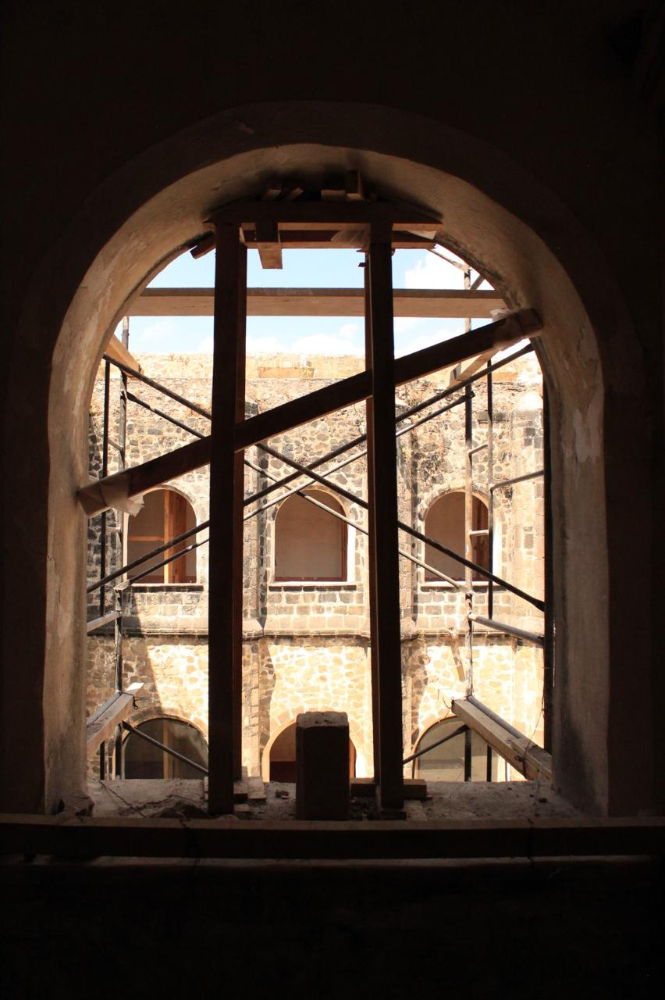

Reconstrucción histórica — Siglo XVI
El Claustro Alto
Cuando baja la luz sobre las laderas del Popocatépetl, el convento comienza a recogerse en el silencio.
Nuestro fraile cruza una vez más el claustro bajo, sube la escalera y recorre el claustro alto hasta su celda. Los corredores que durante el día fueron lugar de paso se convierten ahora en espacio de silencio, oración y descanso.
Así termina una jornada en el convento. Mañana la campana lo llamará otra vez y comenzará de nuevo el ritmo de la oración, el trabajo y la vida fraterna.
El claustro después del sismo

El claustro alto durante los trabajos de restauración posteriores al sismo de 2017.